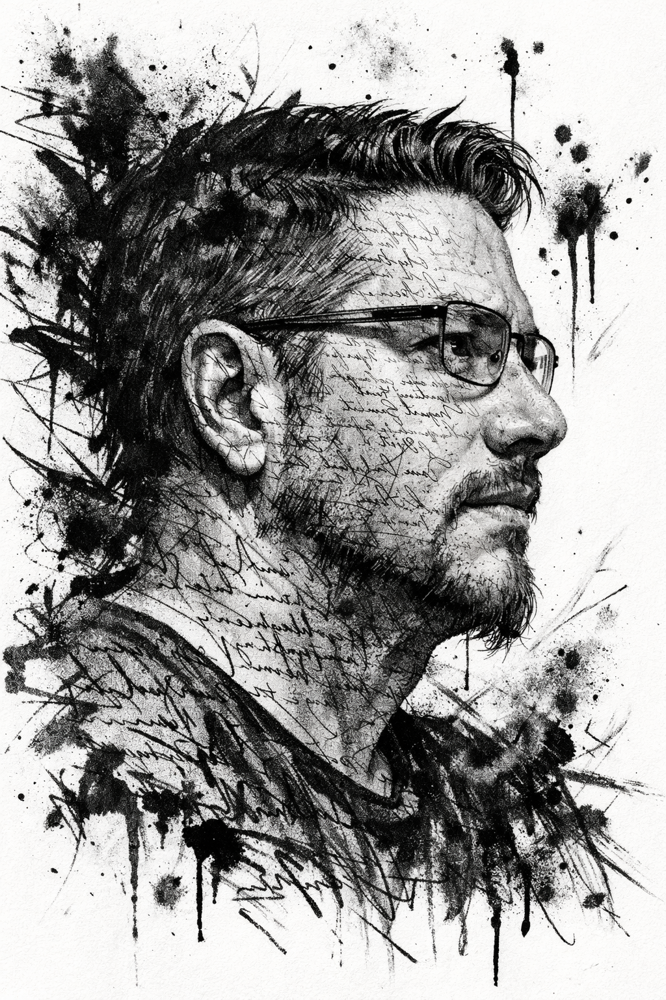

Innovación Digital en el Sector Público
Gestión del cambio cultural en transformación tecnológica masiva
Caso de Investigación AplicadaTransformación Digital en el Sector Público
Estrategia de innovación pública orientada a superar la resistencia organizacional y lograr una adopción efectiva de tecnologías digitales en instituciones de alta demanda ciudadana.
Contexto del Proyecto
Este proyecto analiza la implementación de la transformación digital en una institución pública de alta cobertura nacional, en el marco de la Ley de Transformación Digital del Estado.
El enfoque se centra en el principal factor crítico de éxito de estos procesos: la capacidad organizacional para adoptar el cambio, más allá de la disponibilidad tecnológica.
Problema Identificado
- Adopción tecnológica parcial: sistemas implementados sin uso efectivo
- Falta de gobernanza digital: ausencia de liderazgo transversal
- Resistencia cultural al cambio: persistencia de prácticas tradicionales
- Desalineación estratégica: tecnología no integrada a la gestión institucional
Enfoque Metodológico
El estudio se desarrolló mediante una investigación aplicada con enfoque mixto, integrando:
- Encuestas a usuarios
- Entrevistas a actores clave
- Análisis documental institucional
- Evaluación de indicadores de desempeño
Propuesta de Valor
A partir del diagnóstico, se diseña un modelo de intervención basado en innovación pública, que integra:
- Gestión del cambio organizacional
- Definición de gobernanza digital
- Implementación mediante metodologías ágiles
- Participación activa de usuarios
Hallazgo Clave
"La transformación digital no falla por falta de tecnología, sino por falta de adopción organizacional."
Impacto Esperado
- Mejora en tiempos de respuesta institucional
- Aumento en la adopción efectiva de sistemas digitales
- Reducción de la resistencia organizacional
- Mejora en la experiencia usuaria
Factores Críticos Identificados
- Alta insatisfacción usuaria en procesos digitales
- Baja coordinación interinstitucional
- Ausencia de modelo formal de gobernanza digital
Conclusión Estratégica
La transformación digital efectiva en el sector público requiere una integración real entre tecnología, gestión del cambio y gobernanza institucional.
Este proyecto demuestra que el éxito de estos procesos no depende exclusivamente de la implementación tecnológica, sino de la capacidad de las organizaciones para adaptarse, coordinarse y evolucionar en el tiempo.
Este trabajo representa una aproximación aplicada a los desafíos reales de la transformación digital en el Estado, abordando tanto sus dimensiones técnicas como organizacionales.

Mi Rol en este Proyecto
- Investigador principal
- Analista de datos mixtos (cualitativo/cuantitativo)
- Diseñador metodológico
- Estratega de innovación pública
El Desafío
¿Qué problema identifiqué?
Mi aporte: Formulé la hipótesis de resistencia cultural versus implementación tecnológica, desplazando el foco del problema de lo técnico a lo organizacional.
Mi Metodología
¿Cómo lo investigué? (Click para expandir)
SGD: Secretaría de Gobierno Digital (Ministerio de Hacienda) — entidad transversal de validación externa
Herramientas que dominé:
Mi Análisis
¿Qué descubrí? Validé 3 hipótesis con evidencia empírica
Hipótesis 1
Cultural
"Resistencias funcionales y prácticas tradicionales persisten..."
Validación Empírica
Coexistencia de sistemas digitales con registros manuales paralelos. Doble registro como mecanismo de desconfianza institucional.
Hipótesis 2
Organizacional
"Estructuras de coordinación no favorecen la innovación..."
Validación Empírica
Fragmentación de sistemas, ausencia de coordinador TD formalizado, silos de información entre áreas.
Hipótesis 3
Liderazgo
"Alta Dirección prioriza operatividad sobre cambio cultural..."
Validación Empírica
Ausencia de patrocinio explícito, no participación en exploración, priorización de cobertura sobre transformación digital.
Insight Central
"La brecha digital es de apropiación, no de infraestructura.
El problema NO era tecnológico → Era cultural y organizacional."
Mi Propuesta
¿Qué solución diseñé?
No propuse más tecnología. Diseñé una ruta de cambio cultural basada en innovación pública:
Patrocinio Alta Dirección
Liderazgo visible y explícito
Gobernanza Digital Formal
Estructura de coordinación transversal
Capacitación Diferenciada
Por nivel jerárquico y función
Métricas de Cambio Cultural
Medir lo que no se ve
El Resultado
¿Qué logré?
-
Viabilidad demostrada Técnica, conceptual y operativa de intervención de innovación pública en contexto de alta demanda social
-
Condiciones identificadas 5 habilitantes críticas para el cambio (patrocinio, gobernanza, capacitación, recursos, métricas)
-
Hoja de ruta estratégica Planificación de 6-7 meses con fases exploratorias, piloto y escalamiento
-
Evidencia para decisión Base empírica para toma de decisiones de Alta Dirección sobre transformación digital
Documento completo disponible bajo solicitud
Descargar propuesta completaMis Competencias Demostradas
Análisis de Datos
- Cualitativo
- Cuantitativo
- Investigación aplicada
Gestión del Cambio
- Organizacional
- Metodologías ágiles
- Diseño de instrumentos
Innovación
- Innovación pública
- Sector público
- Transformación digital